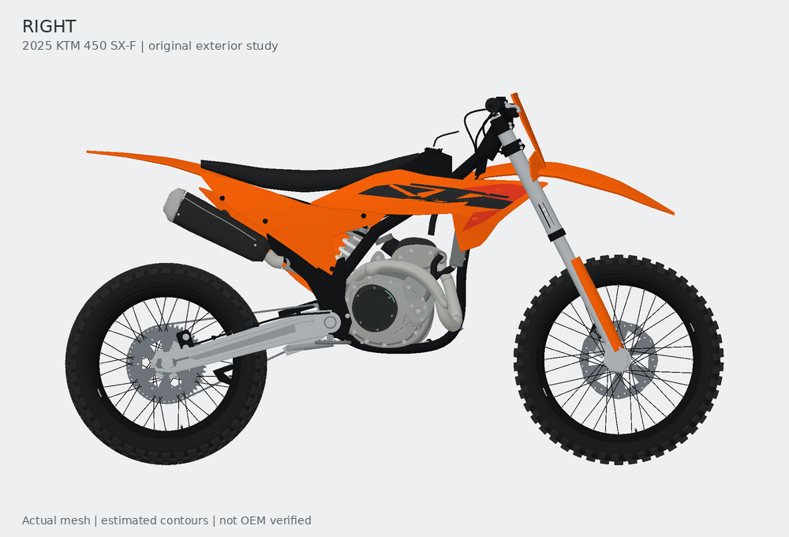
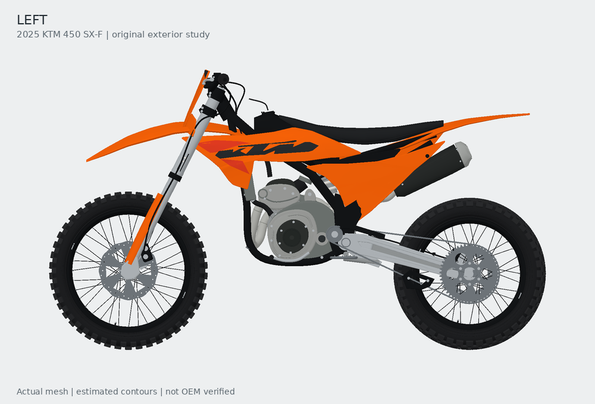
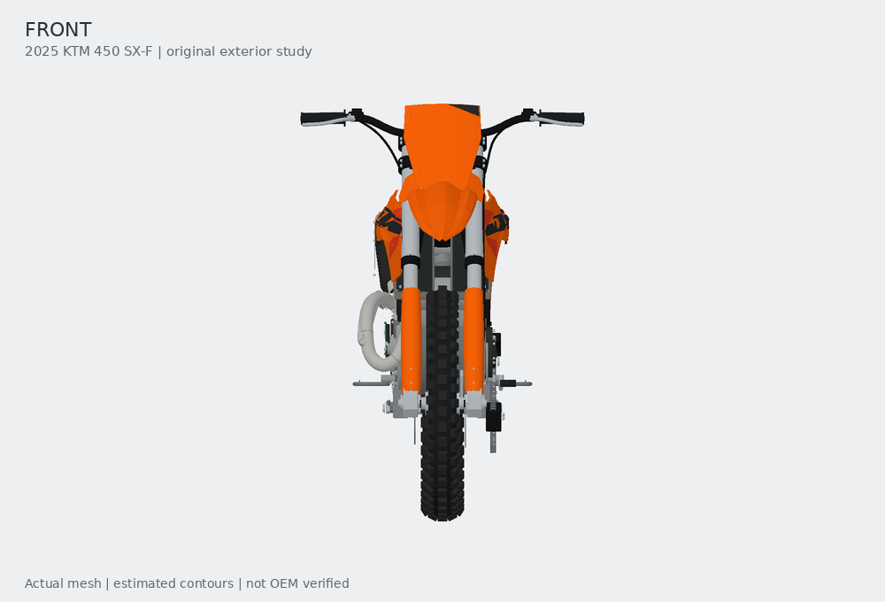
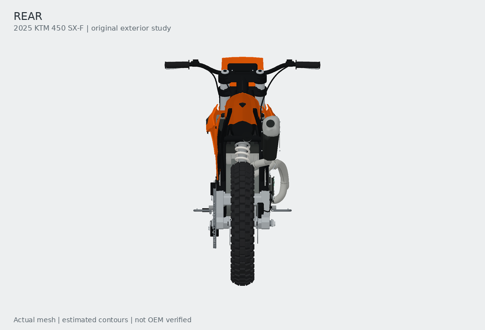
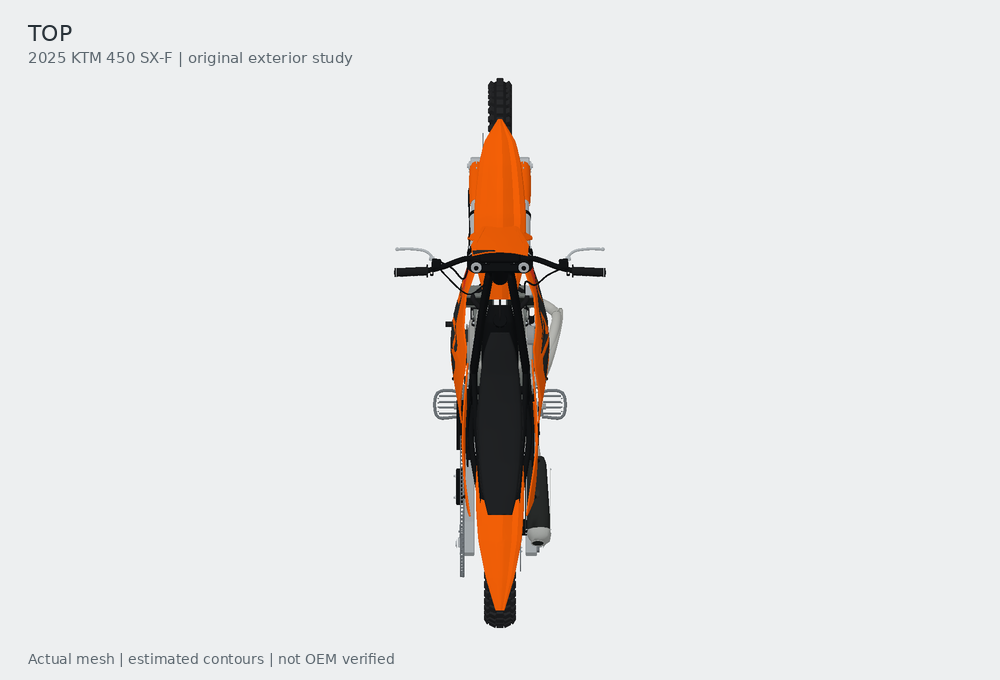
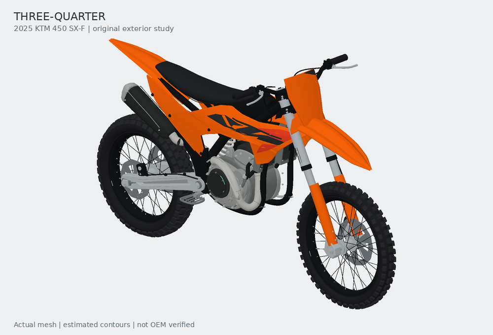
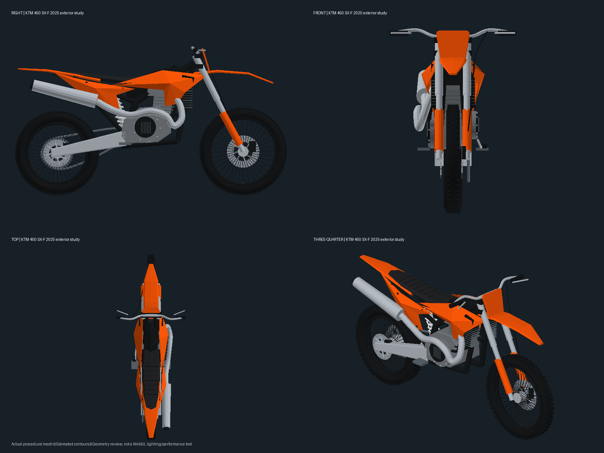

Right


Authored mesh / exact-year reference comparison · 17 October 2026
Substantial reconstruction of the rejected asset. These are actual mesh renders with depth, back-face culling and interpolated normals. They do not test WebGL materials, browser controls or iPhone performance. No AI-generated imagery is used.
References load from their original publishers and are used for comparison. Side views support silhouette checks. Dealer front/rear views have perspective and camera tilt. Top widths remain estimated. Open the interactive development viewer, stock GLB, or reference manifest.










